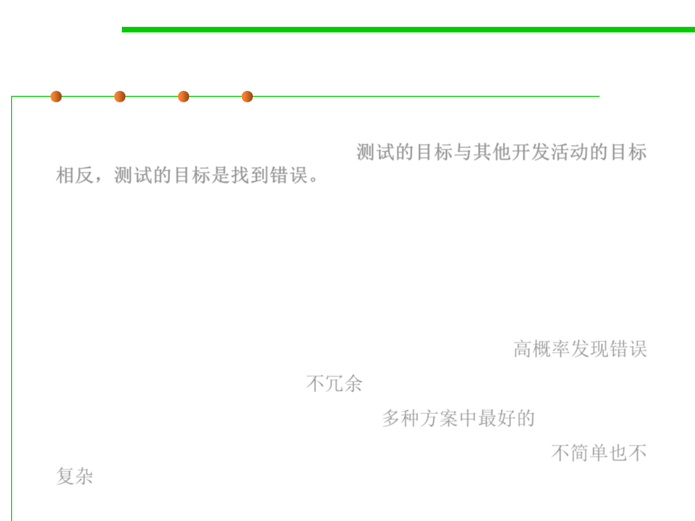

Test Characteristics
7.5 Testing and Test-First Programming
▪ Testing’s goal runs counter to the goals of other development
activities. The goal is to find errors.测试的目标与其他开发活动的目标
相反，测试的目标是找到错误。
▪ Testing can never completely prove the absence of errors.
▪ Testing by itself does not improve software quality.
▪ Testing requires you to assume that you’ll find errors in your code.
▪ A good test has a high probability of finding an error 高概率发现错误
▪ A good test is not redundant 不冗余
▪ A good test should be “best of breed” 多种方案中最好的
▪ A good test should be neither too simple nor too complex 不简单也不
复杂